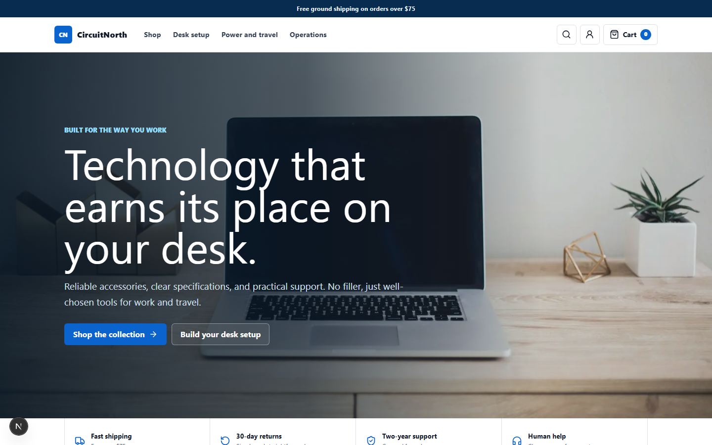

Flagship Application
Next.js + PostgreSQL

CircuitNorth Commerce
Full-stack technology storefront and staff operations console with catalog search,
cart and checkout, order management, role-based workflows, inventory controls,
reporting, audit history, versioned APIs, and transactional PostgreSQL functions.
API Quality
pytest + HTTPX
Retail API Contract Tests
Automated contract suite for CircuitNorth covering successful requests, schema
validation, authorization, conflicts, missing resources, and live API checks.
Data Analytics
Python + Streamlit
Retail Analytics Dashboard
Interactive dashboard that cleans exported retail data and presents revenue,
inventory, category, and customer metrics with pandas, SQL-style analysis, and Plotly.
Linux
Bash
Linux Systems Toolkit
Command-line utilities for log analysis, permission audits, process monitoring, disk
reporting, and file-integrity checks, verified with Bats and ShellCheck.
PostgreSQL
Data Modeling
Retail Database & Reporting Lab
Normalized retail schema with transactional inventory reservation, integrity
constraints, reporting views, query-plan examples, quality checks, and pgTAP tests.
Distributed Systems
FastAPI + Celery
Cloud Job Queue
Redis-backed report processor with idempotent submission, separate workers, bounded
retries, lifecycle metrics, dead-letter handling, recovery controls, and OpenAPI docs.
Open Source
Git
FarmData2 Repository Workflow
Documented coursework contribution in a larger JavaScript and Docker codebase,
including repository navigation, branching, pull requests, and issue-based work.